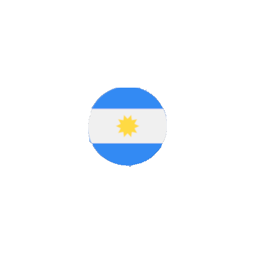

<ion-app>

  <div id="superpuesto" [syle.display]="splash ? 'flex' : 'none'" *ngIf="splash">
    
    
    
    <div id="splash"   src="../assets/icono/IconoAppIdiomas.png"></div>
    <h1>Tabla de Idiomas</h1>
    <h2>Franco Sagnella 4toA</h2>
  </div>
  
  <ion-router-outlet></ion-router-outlet>
</ion-app>
